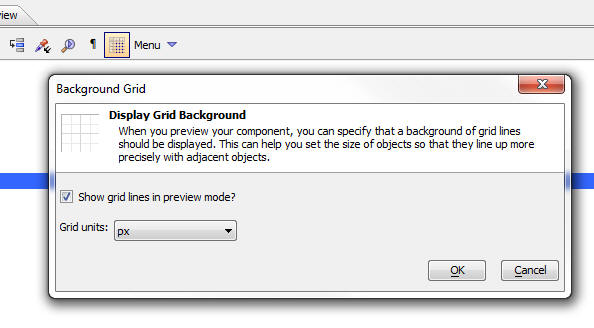
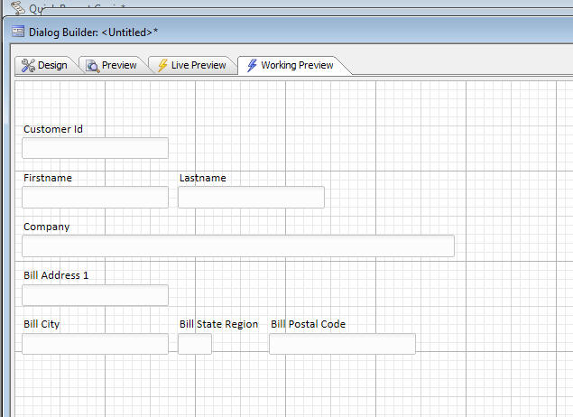

Grid and Dialog Component - Background Grid Lines
When you are designing a Dialog or Grid with a Detail View, it can be helpful to turn on a background set of grid lines to see the dimensions of different object. To turn grid lines on/off, click the icon highlighted in the screen below. See Video D25
Here is how the Dialog appears with grid lines turned on:
